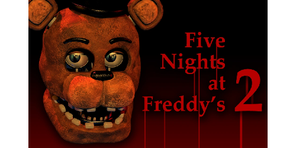

Em Five Nights at Freddy's 2, o jogador assume o papel de Jeremy Fitzgerald, o novo vigia noturno. Este jogo introduz novos animatrônicos e novos elementos de jogabilidade, como o uso de uma máscara de Freddy Fazbear para enganar os animatrônicos e a vigilância constante dos sistemas de segurança. Linha do Tempo: Este jogo ocorre antes dos eventos do primeiro, sendo uma espécie de prelúdio. Ele explora os eventos sombrios que levaram ao fechamento da pizzaria original. Ataques: Durante as noites, os animatrônicos são atraídos pelo jogador e atacam. Os novos possuem reconhecimento facial, mas algo deu errado, e eles atacam indiscriminadamente. Homem Roxo: As gravações sugerem que o Homem Roxo, o assassino das crianças, está envolvido nos eventos.
